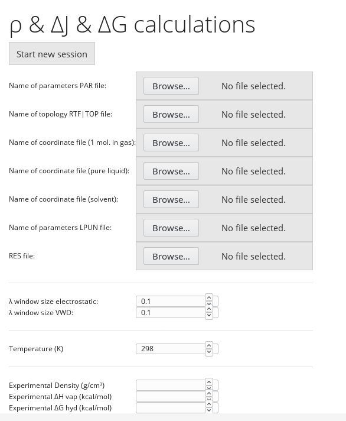

Fitting Web 2.0.1: Help
Contents:
3. LJ Fit
3.1 Debugging crashed grid points
Lennard-Jones fitting takes place using a
grid-based approach. The approach used is determined by
the large computational expense involved in calculating
the y-data (in particular the solvation free energies)
required to score each set of parameters. The first
restriction that is used to save time is to reduce the
dimensionality of the fitting problem. This is achieved by
scaling all the initial Lennard Jones parameters for the
molecule of interest by a single scaling factor "λσ", and
all of the Lennard Jones ε parameters by another
scaling factor "λε".
As no analytical gradients are available,
the next time-saving measure is to use a simple grid-based
fitting approach that doesn't require numerical gradients
to be calculated, where different scaling factors are
applied across a grid (e.g. a 3x3 grid where λσ= {0.9,
1.0, 1.1}, λε= {0.9, 1.0, 1.1}). The best result is chosen
from the grid, or the fit can be further refined by
creating a finer grid around the best point in the first
grid. Even this stripped-down fitting approach can be
expected to take of the order of days to complete.
The basic workflow for Lennard-Jones fitting in the fitting wizard is as follows:
-
Select point or grid parameters for grid-based parameter fitting
-
Inspect fitting results and define grid for further refinement as necessary
In more detail:
-
Set up an equilibrated multipolar system
This can be done using a tool such as the CHARMM GUI to save time. The Fitting Wizard expects a single multipolar solute molecule solvated in a periodic TIP3P water box, and to save computing resources used by the wizard it currently requires this system to have been fully equilibrated before files are uploaded. To preserve equilibration a CHARMM "restart" file is also required, to avoid reassigning random velocities.
A final requirement is to use a tool such as "packmol" to pack a box with replicas of the solute molecule, representing the solute in liquid form. This box will be used to run simulations of the pure liquid in order to determine the liquid's density and vaporization enthalpy.
- Upload
supporting CHARMM files

The required files are the CHARMM parameter file used for equilibration, the corresponding topology (rtf) file, a PDB file containing the solvated, equilibrated system (solute molecule in a solvent box), with coordinates taken from the final step of your equilibration), a "pure liquid" PDB file containing the coordinates from packmol used to create a box of pure liquid from replicas of the solute molecule, the corresponding CHARMM MTPL module lpun file containing multipole moments for the solute molecule (also used for your equilibration, probably generated using the MTP-Fit module of the Fitting Wizard), and the restart file produced at the end of your equilibration.
- Enter reference
data values / simulation parameters
Experimental data entered here are used as target "y-data" to evaluate the score in subsequent fitting. The experimental density refers to the density of the molecule to be fitted in pure liquid form (this assumes that the substance forms a liquid at simulation temperature). The vaporization enthalpy again refers to the molecule in pure liquid form. The hydration free energy refers to the free energy of solvation of a single molecule in pure liquid water, as estimated by thermodynamic integration calculations in CHARMM (see publication cited in "Overview" for details).
The "lambda" window size parameters determine the thermodynamic integration window sizes for electrostatic and Lennard-Jone (van der Waals) calculations. The simulation temperature applies to both pure liquid and thermodynamic integration calculations, so if the TIP3P water model is to be used then a value of around 298 K is safest.
Clicking "Start new session" launches the fitting session overview page.
- Select
point or grid parameters for grid-based parameter
fitting
This page shows an overview of all fitting grid points calculated so far (if any) in a table view. You can either submit a single, custom point (useful for checking performance of initial parameters or refining the fit after running a grid), or submit a grid of λε and λσ points using "Run grid values".The "run grid values" pop-up generates the fitting grid described above. An n x m grid with n λε points and m λσ points centered at [λε=1.0, λσ=1.0] is generated by setting the "Number λε"and "Number λσ" values appropriately. The step-size between grid points is set using Δ λσ, so λε = {0.95, 1.00, 1.05} would be created using "Number λε = 3" and "Δ λε = 0.05". Click "Generate values" to create the corresponding grid. You are also given the opportunity to change the window size for thermodynamic integration calculations (originally set in step 3) for both the electrostatic and van der Waals terms independently. Once all parameters are set correctly, click "Run grid" to submit calculations to the cluster.
The "Run custom values" button is used to run a single grid point with any λε, λσ value. Again the thermodynamic integration window sizes can be redefined, and the calculations are launched by clicking "Execute single run"
Note that a large number of calculations will be launched as there are many TI windows to be evaluated, and that if the Lennard-Jones TI windows are set too large then they will not converge, the windows will automatically by subdivided and the smaller windows must then also be evaluated. If the windows are set too small then an unnecessarily large number of windows must be evaluated. The job ids from the running jobs will be displayed under the progress bar after launching calculations, allowing you to track their progress on the server or cluster where the jobs are submitted by the fitting wizard.
- Inspect
fitting results and define grid for further refinement
as necessary
After all pure liquid, gas phase and thermodynamic integration runs have successfully completed, the user can return to the "LJ Fitting Session" page. Results for each grid point are shown in the table, with the best result (lowest "score") highlighted in bold. Any entries highlighted red indicate a problem with the run, usually meaning that some part of the run has crashed. Grid points can be deleted, removing the associated files from the server by using the trash icon. Additional calculations can be performed using the "Run grid values" and "Run custom values" buttons as before. To help with debugging, the user can also access all files generated by the fitting wizard during the calculations using the file icon at the left side of each grid point's data. This can be useful to identify the cause of a crash, such as λε or λσ moving out of the reasonable range, or a defective file being uploaded at the start of the fit.
3.1
Debugging crashed grid points
After a failed run the most important diagnostic step is
to identify which part of the run failed and to download
the corresponding files. Messages from the scripts may be
printed to the "job progress" screen (screen with progress
bar), helping to pin down where the calculation crashed.
If you have access to the log files of the fitting service
(running on the cluster), then these may provide more
detailed information, as well as the log files for the UI
which are written on the UI server. Make a note of the
"Calculation id" from the job progress page as this will
help you to find the correct folders on the server if
necessary.
Even without access
to the logs and without a meaningful error message from the
job progress page, the necessary information may be found by
continuing to the "LJ Fitting Session" screen. The failed
grid point will be highlighted in red, and the associated
files may be accessible using the file browser icon to the
left of the table. The output files can be browsed to
identify which job(s) did not terminate successfully and
why.
If no files were
uploaded, the files can still be found on either the cluster
or the server hosting the UI. On the cluster you should look
inside the "fitting_service/data" folder in the installation
directory of the fitting service. The folders here are named
by calculation id, so if you were able to note this from the
jobs status page (page with the progress bar) after your
jobs finished running then you can use it to identify which
folder contains your job files. If you don't know the
calculation id, the first half of the calculation ids are
based on the time that you first created the calculation by
starting a new "LJ Fit" session (the time that you first
uploaded the files for this LJ fit), so use this information
to identify which folders are most likely. To check that you
have identified the correct folder, browse to the "input"
subfolder and check that the files you uploaded are there.
If so then check the other folder with automatically
generated run id in the same folder as "input" to find
subfolders containing the output from your jobs. Note that
upon job completion these files may have been copied to the
UI and deleted, in which case you will need to fetch them
there instead.
On the server
hosting the UI you can similarly check in the installation
directory of the UI service (named e.g. fitting-web-2.0.1),
which contains the "bin" folder from which the UI is
launched. This directory also contains a subfolder named
"data", which in turn contains a subfolder corresponding to
each username with an open session. The relevant files, if
they have been uploaded from the cluster, will be in
subdirectories of this folder.
Previous: MTP Fit